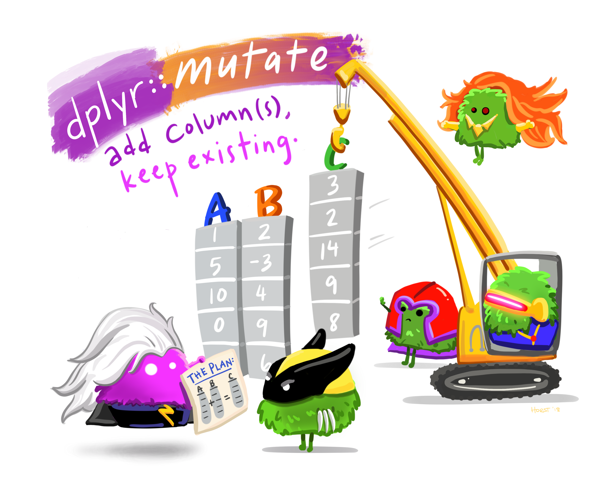

Last week, Jess introduced us to to the tidyverse, a collection of packages to facilitate doing data science with R, including data manipulation and visualization.
We saw two general properties of the tidyverse: that it has a strong focus on data frames and that operations are usually connected using the “pipe” (|>) operator.
We also learned about two key functions from the tidyverse’s dplyr package:
filter() to pick rows (which typically represent observations/samples/individuals)
select() to pick columns (which typically represent variables/properties)
Learning objectives for today
We will continue learning about dplyr:
An overview of key dplyr functionality
Sorting data frame rows with arrange()
Renaming data frame columns with rename()
Adding and manipulating data frame columns with mutate()
Like last week, we will practice with the diamonds dataframe that is automatically loaded along with the tidyverse.
Setting up
Load the tidyverse:
library(tidyverse)
── Attaching core tidyverse packages ──────────────────────── tidyverse 2.0.0 ──
✔ dplyr 1.1.4 ✔ readr 2.1.5
✔ forcats 1.0.0 ✔ stringr 1.5.1
✔ ggplot2 3.4.4 ✔ tibble 3.2.1
✔ lubridate 1.9.3 ✔ tidyr 1.3.1
✔ purrr 1.0.2
── Conflicts ────────────────────────────────────────── tidyverse_conflicts() ──
✖ dplyr::filter() masks stats::filter()
✖ dplyr::lag() masks stats::lag()
ℹ Use the conflicted package (<http://conflicted.r-lib.org/>) to force all conflicts to become errors
Still need to install the tidyverse? Click here for instructions
install.packages("tidyverse")
2 Overview of key dplyr functionality
Functions from the dplyr package have the following commonalities:
The first argument is always a data frame (this makes them pipe-friendly)
Subsequent arguments typically describe which columns to operate on
The output is always a data frame
Key functions for row-wise operations include:
filter() — picks rows based on values in one or more columns (last week)
arrange() — orders rows based on values in selected columns (this week)
mutate() — creates new columns and changes the values of columns (this week)
Key functions for groups of rows include:
summarise() — collapses a group into a single row with the purpose of summarizing data
Finally, there are functions to combine multiple data frames (joins, with for example inner_join()).
This week, we will cover the remaining functions listed above for row- and column-wise operations. In subsequent sessions, we will cover the more complex summarizing and joining functions.
The tidyr package contains additional data wrangling functions
There is a separate core tidyverse package (tidyr) with closely related functions that can “reshape” (“pivot”) data frames between wider and longer formats — we will also cover those in a later dedicated Code Club session.
3 Sorting with arrange()
The arrange() function is like the sort function in Excel: it changes the order of the rows based on the values in one or more columns. For example, you might want to sort entries by their cost or size, or by their names in alphabetical order.
We’ll see a first example using the diamonds data frame. Keep in mind that in this data frame, each row represents a single diamond, and the columns provide different pieces of information about a diamond:
# Note the initial order in the 'carat' column:head(diamonds)
# A tibble: 6 × 10
carat cut color clarity depth table price x y z
<dbl> <ord> <ord> <ord> <dbl> <dbl> <int> <dbl> <dbl> <dbl>
1 0.23 Ideal E SI2 61.5 55 326 3.95 3.98 2.43
2 0.21 Premium E SI1 59.8 61 326 3.89 3.84 2.31
3 0.23 Good E VS1 56.9 65 327 4.05 4.07 2.31
4 0.29 Premium I VS2 62.4 58 334 4.2 4.23 2.63
5 0.31 Good J SI2 63.3 58 335 4.34 4.35 2.75
6 0.24 Very Good J VVS2 62.8 57 336 3.94 3.96 2.48
Therefore, sorting this data frame means rearranging the order of the diamonds based on their properties — in the example below, based on the carat of the diamond:
# Now, we'll sort by the values in the 'carat' column:diamonds |>arrange(carat)
# A tibble: 53,940 × 10
carat cut color clarity depth table price x y z
<dbl> <ord> <ord> <ord> <dbl> <dbl> <int> <dbl> <dbl> <dbl>
1 0.2 Premium E SI2 60.2 62 345 3.79 3.75 2.27
2 0.2 Premium E VS2 59.8 62 367 3.79 3.77 2.26
3 0.2 Premium E VS2 59 60 367 3.81 3.78 2.24
4 0.2 Premium E VS2 61.1 59 367 3.81 3.78 2.32
5 0.2 Premium E VS2 59.7 62 367 3.84 3.8 2.28
6 0.2 Ideal E VS2 59.7 55 367 3.86 3.84 2.3
7 0.2 Premium F VS2 62.6 59 367 3.73 3.71 2.33
8 0.2 Ideal D VS2 61.5 57 367 3.81 3.77 2.33
9 0.2 Very Good E VS2 63.4 59 367 3.74 3.71 2.36
10 0.2 Ideal E VS2 62.2 57 367 3.76 3.73 2.33
# ℹ 53,930 more rows
As you can see, there are many rows with the same, smallest value of carat, so we may be interested in sorting by an additional column, which will break the ties in our first sorting column:
# Sort first by carat, then by price:diamonds |>arrange(carat, cut)
# A tibble: 53,940 × 10
carat cut color clarity depth table price x y z
<dbl> <ord> <ord> <ord> <dbl> <dbl> <int> <dbl> <dbl> <dbl>
1 0.2 Very Good E VS2 63.4 59 367 3.74 3.71 2.36
2 0.2 Premium E SI2 60.2 62 345 3.79 3.75 2.27
3 0.2 Premium E VS2 59.8 62 367 3.79 3.77 2.26
4 0.2 Premium E VS2 59 60 367 3.81 3.78 2.24
5 0.2 Premium E VS2 61.1 59 367 3.81 3.78 2.32
6 0.2 Premium E VS2 59.7 62 367 3.84 3.8 2.28
7 0.2 Premium F VS2 62.6 59 367 3.73 3.71 2.33
8 0.2 Premium D VS2 62.3 60 367 3.73 3.68 2.31
9 0.2 Premium D VS2 61.7 60 367 3.77 3.72 2.31
10 0.2 Ideal E VS2 59.7 55 367 3.86 3.84 2.3
# ℹ 53,930 more rows
Question: Does the resulting order of entries in the cut column make sense to you? If not, what might be going on? (Click to see the solution)
Clearly, the order is not alphabetical, but it could be so in descending order — though this is not in fact the case.
As we briefly saw last week, the cut column (as well as the color and clarity columns) are of the “ordered factor” type: therefore, when we sort by this column, the order as initially defined by whoever created this data frame will be respected:
head(diamonds$cut)
[1] Ideal Premium Good Premium Good Very Good
Levels: Fair < Good < Very Good < Premium < Ideal
This also implies that there are no 0.2-carat (the lowest value) diamonds with Fair or Good cuts, because the first-listed and therefore lowest cut was Very Good.
By default, the sorting is done in ascending order (small-to-big), as you probably expected. But of course we may sometimes want to sort in descending (big-to-small) order, which we can do with the desc() helper function:
# Sort first by carat, then by price:diamonds |>arrange(desc(carat))
In the examples above, and in all of today’s examples and exercises, we are simply printing the output data frame. This means that we are leaving the original data frame diamondsunchanged and that we are not storing our results elsewhere either.
Recall that you can assign to a new dataframe as one way to store your results:
diamonds_sorted <- diamonds |>arrange(carat)
4 Renaming columns with rename() (and select())
It is pretty common that you are not happy with the names of columns in your data frame and want to rename one or more. This can be done with the rename() function, which uses the syntax <new-name> = <old-name>:
# Below, we rename the 'x' column to 'length', and the 'y' column to 'width':diamonds |>rename(length = x, width = y)
# A tibble: 53,940 × 10
carat cut color clarity depth table price length width z
<dbl> <ord> <ord> <ord> <dbl> <dbl> <int> <dbl> <dbl> <dbl>
1 0.23 Ideal E SI2 61.5 55 326 3.95 3.98 2.43
2 0.21 Premium E SI1 59.8 61 326 3.89 3.84 2.31
3 0.23 Good E VS1 56.9 65 327 4.05 4.07 2.31
4 0.29 Premium I VS2 62.4 58 334 4.2 4.23 2.63
5 0.31 Good J SI2 63.3 58 335 4.34 4.35 2.75
6 0.24 Very Good J VVS2 62.8 57 336 3.94 3.96 2.48
7 0.24 Very Good I VVS1 62.3 57 336 3.95 3.98 2.47
8 0.26 Very Good H SI1 61.9 55 337 4.07 4.11 2.53
9 0.22 Fair E VS2 65.1 61 337 3.87 3.78 2.49
10 0.23 Very Good H VS1 59.4 61 338 4 4.05 2.39
# ℹ 53,930 more rows
As an aside, it is also possible rename the columns that you pick with the select() function:
If your data frame has many columns that need to be renamed, the janitor::clean_names() function provides automated column name cleaning that can be extremely handy.
For example, you might read in an Excel sheet with 20 columms, many of which have spaces in their names, and some of which have other special characters like % or &. Those kinds of column names don’t play well with R, and clean_names() would automatically replace such characters with (by default) underscores (_).
You can try this function in the last Bonus exercise.
5 Exercises I
5.1 Renaming
Above, we renamed the cryptically named x and y columns, but there’s a third single-letter column name: z.
Check the help for this data frame by typing ?diamonds, and figure out what the z column represents.
Rename the z column to give it a more descriptive name like we did above for x and y. (You may run into a problem here! If so, try to understand and resolve it.)
Solution (click here)
The z column represents the depth of the diamond in mm:
?diamonds
# The output will include:
z
depth in mm (0–31.8)
depth
total depth percentage = z / mean(x, y) = 2 * z / (x + y) (43–79)
So let’s try to rename it to depth:
diamonds |>rename(depth = z)
Error in `rename()`:
! Names must be unique.
✖ These names are duplicated:
* "depth" at locations 5 and 10.
Ouch! That didn’t work, because a column named depth already exists, and column names must be unique. That other depth column is the diamond’s “total depth percentage” rather than the raw depth.
There’s no one right way to resolve this (and of course one option would be to refrain from renaming z altogether), but we could for example use depth_mm etc. notations for these columns:
diamonds |>rename(length_mm = x, width_mm = y, depth_mm = z)
# A tibble: 53,940 × 10
carat cut color clarity depth table price length_mm width_mm depth_mm
<dbl> <ord> <ord> <ord> <dbl> <dbl> <int> <dbl> <dbl> <dbl>
1 0.23 Ideal E SI2 61.5 55 326 3.95 3.98 2.43
2 0.21 Premium E SI1 59.8 61 326 3.89 3.84 2.31
3 0.23 Good E VS1 56.9 65 327 4.05 4.07 2.31
4 0.29 Premium I VS2 62.4 58 334 4.2 4.23 2.63
5 0.31 Good J SI2 63.3 58 335 4.34 4.35 2.75
6 0.24 Very Good J VVS2 62.8 57 336 3.94 3.96 2.48
7 0.24 Very Good I VVS1 62.3 57 336 3.95 3.98 2.47
8 0.26 Very Good H SI1 61.9 55 337 4.07 4.11 2.53
9 0.22 Fair E VS2 65.1 61 337 3.87 3.78 2.49
10 0.23 Very Good H VS1 59.4 61 338 4 4.05 2.39
# ℹ 53,930 more rows
5.2 Arranging
See the prices (and other properties) of the most expensive diamonds in the data frame by using the arrange() function like we did above.
Solution (click here)
To see the most expensive (highest-priced) diamond first, we’ll have to arrange by the price column in descending order:
diamonds |>arrange(desc(price))
# A tibble: 53,940 × 10
carat cut color clarity depth table price x y z
<dbl> <ord> <ord> <ord> <dbl> <dbl> <int> <dbl> <dbl> <dbl>
1 2.29 Premium I VS2 60.8 60 18823 8.5 8.47 5.16
2 2 Very Good G SI1 63.5 56 18818 7.9 7.97 5.04
3 1.51 Ideal G IF 61.7 55 18806 7.37 7.41 4.56
4 2.07 Ideal G SI2 62.5 55 18804 8.2 8.13 5.11
5 2 Very Good H SI1 62.8 57 18803 7.95 8 5.01
6 2.29 Premium I SI1 61.8 59 18797 8.52 8.45 5.24
7 2.04 Premium H SI1 58.1 60 18795 8.37 8.28 4.84
8 2 Premium I VS1 60.8 59 18795 8.13 8.02 4.91
9 1.71 Premium F VS2 62.3 59 18791 7.57 7.53 4.7
10 2.15 Ideal G SI2 62.6 54 18791 8.29 8.35 5.21
# ℹ 53,930 more rows
6 Manipulating with mutate()
Let’s take a look at the official mutate() documentation figure (😛):

Illustration by Allison Horst
It says “add column(s), keep existing” and shows that a third column, C, is being added to a data frame.
What do the values in column C appear to represent (compare with A and B)? (Click for the solution)
Column C appears to be columns A + B, e.g in the first row, 1 + 2 = 3.
Let’s try to do something similar –creating a new column that is based on the values of other columns– with diamond dimensions. We’ll add a column named volume that is generated by multiplying the length, width, and depth columns:
# (I'm first using select just to limit the output that is printed)diamonds |>select(x, y, z) |>mutate(volume = x * y * z)
As you could see in above examples, the operation is executed in a (vectorized) row-wise fashion: the volume that we see in the first row was created by multiplying x, y and z in the first row, and so on.
Also note that the new column created by mutate() is (by default) added as the last column.
Instead of creating a new column with mutate(), it is also possible to simply change the values in a column (without creating a new column) by assigning back to the same column name. For example, say that we wanted diamond length to be in cm instead of in mm:
Above, we converted the diamond lengths (column x) from mm to cm.
Expand on that code to convert all three dimension columns (x, y, and, z).
Also give the converted columns names that indicate the measurements are in cm.
Solution so far (click here)
Several naming schemes are reasonable, but I will use length_cm etc:
diamonds |>mutate(length_cm = x /10,width_cm = y /10,depth_cm = z /10)
# A tibble: 53,940 × 13
carat cut color clarity depth table price x y z length_cm
<dbl> <ord> <ord> <ord> <dbl> <dbl> <int> <dbl> <dbl> <dbl> <dbl>
1 0.23 Ideal E SI2 61.5 55 326 3.95 3.98 2.43 0.395
2 0.21 Premium E SI1 59.8 61 326 3.89 3.84 2.31 0.389
3 0.23 Good E VS1 56.9 65 327 4.05 4.07 2.31 0.405
4 0.29 Premium I VS2 62.4 58 334 4.2 4.23 2.63 0.42
5 0.31 Good J SI2 63.3 58 335 4.34 4.35 2.75 0.434
6 0.24 Very Good J VVS2 62.8 57 336 3.94 3.96 2.48 0.394
7 0.24 Very Good I VVS1 62.3 57 336 3.95 3.98 2.47 0.395
8 0.26 Very Good H SI1 61.9 55 337 4.07 4.11 2.53 0.407
9 0.22 Fair E VS2 65.1 61 337 3.87 3.78 2.49 0.387
10 0.23 Very Good H VS1 59.4 61 338 4 4.05 2.39 0.4
# ℹ 53,930 more rows
# ℹ 2 more variables: width_cm <dbl>, depth_cm <dbl>
Next, expand your “pipeline” to either remove the columns with mm measurements, or rename the original x, y, and z columns to clarify that those are in mm.
Hint: how to remove specific columns with select() (click here)
If you just want to remove one or a few columns from a data frame with many columns, you’d want to be able to directly mark them for removal (rather than listing all columns you want to keep), which you can do as follows:
# This will remove the carat and cut columns:diamonds |>select(-carat, -cut)
# A tibble: 53,940 × 8
color clarity depth table price x y z
<ord> <ord> <dbl> <dbl> <int> <dbl> <dbl> <dbl>
1 E SI2 61.5 55 326 3.95 3.98 2.43
2 E SI1 59.8 61 326 3.89 3.84 2.31
3 E VS1 56.9 65 327 4.05 4.07 2.31
4 I VS2 62.4 58 334 4.2 4.23 2.63
5 J SI2 63.3 58 335 4.34 4.35 2.75
6 J VVS2 62.8 57 336 3.94 3.96 2.48
7 I VVS1 62.3 57 336 3.95 3.98 2.47
8 H SI1 61.9 55 337 4.07 4.11 2.53
9 E VS2 65.1 61 337 3.87 3.78 2.49
10 H VS1 59.4 61 338 4 4.05 2.39
# ℹ 53,930 more rows
Full solution (click here)
Option 1 — remove the columns with mm measurements:
# (Note that the final 2 added columns are hidden in the output!)diamonds |>mutate(length_cm = x /10,width_cm = y /10,depth_cm = z /10) |>select(-x, -y, -z)
# A tibble: 53,940 × 10
carat cut color clarity depth table price length_cm width_cm depth_cm
<dbl> <ord> <ord> <ord> <dbl> <dbl> <int> <dbl> <dbl> <dbl>
1 0.23 Ideal E SI2 61.5 55 326 0.395 0.398 0.243
2 0.21 Premium E SI1 59.8 61 326 0.389 0.384 0.231
3 0.23 Good E VS1 56.9 65 327 0.405 0.407 0.231
4 0.29 Premium I VS2 62.4 58 334 0.42 0.423 0.263
5 0.31 Good J SI2 63.3 58 335 0.434 0.435 0.275
6 0.24 Very Good J VVS2 62.8 57 336 0.394 0.396 0.248
7 0.24 Very Good I VVS1 62.3 57 336 0.395 0.398 0.247
8 0.26 Very Good H SI1 61.9 55 337 0.407 0.411 0.253
9 0.22 Fair E VS2 65.1 61 337 0.387 0.378 0.249
10 0.23 Very Good H VS1 59.4 61 338 0.4 0.405 0.239
# ℹ 53,930 more rows
Option 2 — also keep the cm columns, but rename them:
diamonds |>mutate(length_cm = x /10,width_cm = y /10,depth_cm = z /10) |>rename(length_mm = x,width_mm = y,depth_mm = z)
# A tibble: 53,940 × 13
carat cut color clarity depth table price length_mm width_mm depth_mm
<dbl> <ord> <ord> <ord> <dbl> <dbl> <int> <dbl> <dbl> <dbl>
1 0.23 Ideal E SI2 61.5 55 326 3.95 3.98 2.43
2 0.21 Premium E SI1 59.8 61 326 3.89 3.84 2.31
3 0.23 Good E VS1 56.9 65 327 4.05 4.07 2.31
4 0.29 Premium I VS2 62.4 58 334 4.2 4.23 2.63
5 0.31 Good J SI2 63.3 58 335 4.34 4.35 2.75
6 0.24 Very Good J VVS2 62.8 57 336 3.94 3.96 2.48
7 0.24 Very Good I VVS1 62.3 57 336 3.95 3.98 2.47
8 0.26 Very Good H SI1 61.9 55 337 4.07 4.11 2.53
9 0.22 Fair E VS2 65.1 61 337 3.87 3.78 2.49
10 0.23 Very Good H VS1 59.4 61 338 4 4.05 2.39
# ℹ 53,930 more rows
# ℹ 3 more variables: length_cm <dbl>, width_cm <dbl>, depth_cm <dbl>
7.2 Price per carat
Include the following steps in a single “pipeline”:
Add a new column with the price per carat, rounded to whole dollars.
Sort by price per carat in descending order
Only keep diamonds with a price per carat above $5,000.
What is the highest price per carat, and how many diamonds are you left with?
Solution (click here)
We are left with 13,115 rows and the highest price per carat is $17,829:
# A tibble: 13,115 × 11
carat cut color clarity depth table price x y z price_per_carat
<dbl> <ord> <ord> <ord> <dbl> <dbl> <int> <dbl> <dbl> <dbl> <dbl>
1 1.04 Very… D IF 61.3 56 18542 6.53 6.55 4.01 17829
2 1.07 Prem… D IF 60.9 58 18279 6.67 6.57 4.03 17083
3 1.03 Ideal D IF 62 56 17590 6.55 6.44 4.03 17078
4 1.07 Very… D IF 60.9 58 18114 6.57 6.67 4.03 16929
5 1.02 Very… D IF 61.7 59 17100 6.42 6.52 3.99 16765
6 1.07 Very… D IF 59 59 17909 6.63 6.72 3.94 16737
7 1.09 Very… D IF 61.7 58 18231 6.55 6.65 4.07 16726
8 1 Ideal D IF 60.7 57 16469 6.44 6.48 3.92 16469
9 1 Very… D IF 63.3 59 16073 6.37 6.33 4.02 16073
10 1.01 Prem… D IF 61.6 56 16234 6.46 6.43 3.97 16073
# ℹ 13,105 more rows
7.3 Bonus: Renaming columns with janitor::clean_names()
Install and then load the package janitor.
Solution (click here)
Install:
install.packages("janitor")
Load:
library(janitor)
Attaching package: 'janitor'
The following objects are masked from 'package:stats':
chisq.test, fisher.test
Run the following code to create a “tibble” (tidyverse-style dataframe) with poor column names:
# (The backticks ` around the column names are necessary to assign such unwieldy names)sale_stats <-tibble(`Abbreviated ID`=c("DZ", "GA", "PT"),`% Sold`=c(62, 98, 18),`Nr Stored`=c(372, 13, 175),`Lost&Found`=c(0, 0, 2))
Print the sale_stats data frame and take a look at how the column names are shown.
Run the clean_names() function on the sale_stats data frame. (It will take a data frame as its first argument and return a dataframe, much like the dplyr functions we’ve seen). Take a close look at the output — can you spot at least 3 types of changes that it made?